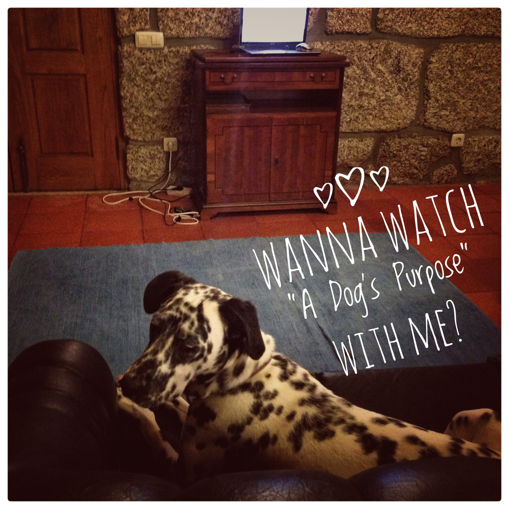

Festival de Festinhas
Postado por Jerónimo
Os dálmatas adoram festinhas, especialmente quando são pequenininhos. Vejam só este vídeo:
- Contactos
- email: bjer@gmail.com
- Rua das Flores n.º112. 4150323 Porto. 931231312
Análise do Filme "A Dogs Purpose"
Postado por Bali
Eu gostei muito deste filme, especialmente puder ter assistido no sofá com a minha família. Tem cenas muito emocionantes e é um história muito bonita sobre cães.
Nota Final:
Lista de Filmes Favoritos
Postado por Bali
Aqui está a lista dos meus filmes favoritos :-). Em nenhuma ordem em particular.
- 101Dálmatas
- Weiner Dog
- Bethoven
- A Dog´s Purpose
- Hachiko
- Patrick
| Nome | Raça | Dono |
|---|---|---|
| Maggie | Dachshund | Laís |
| Mel | Pug | Laís |